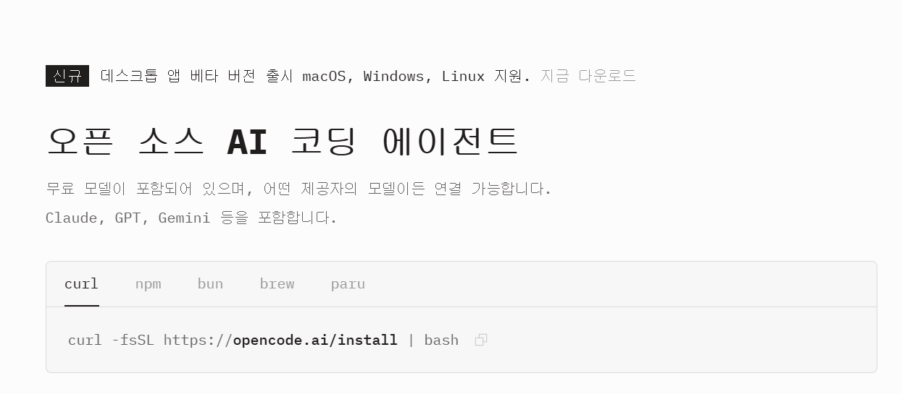
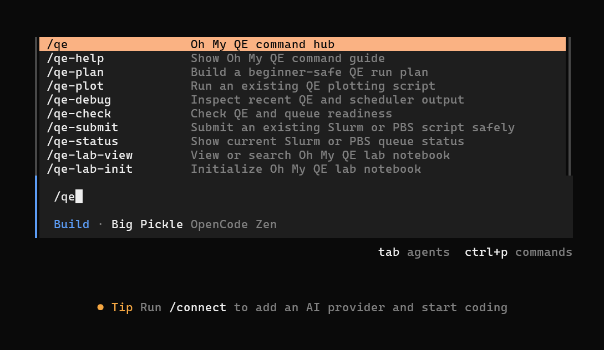
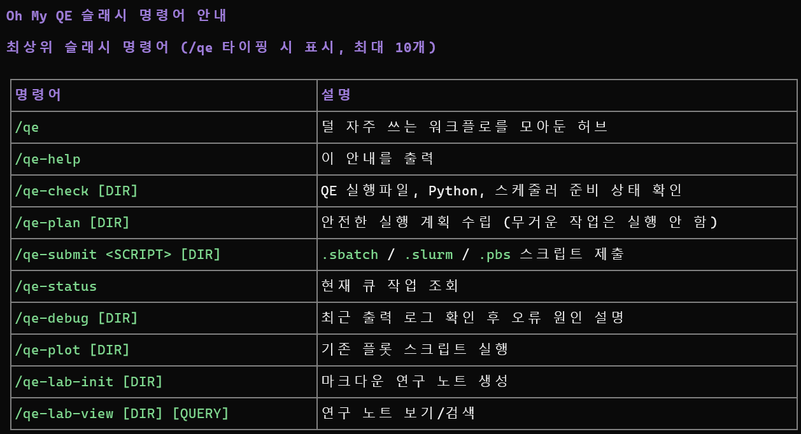
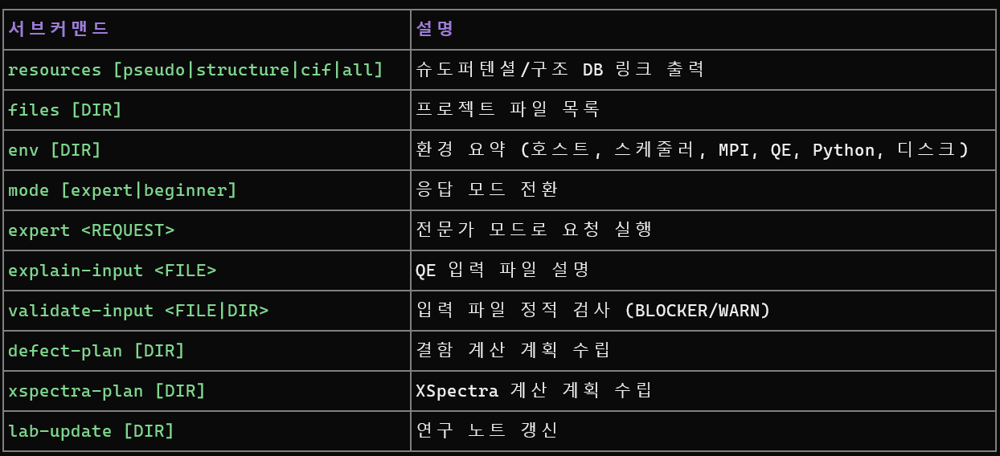
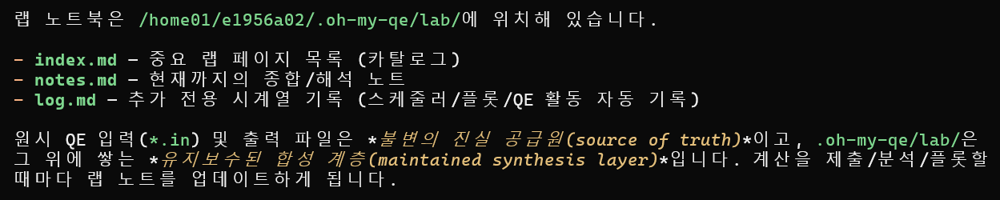
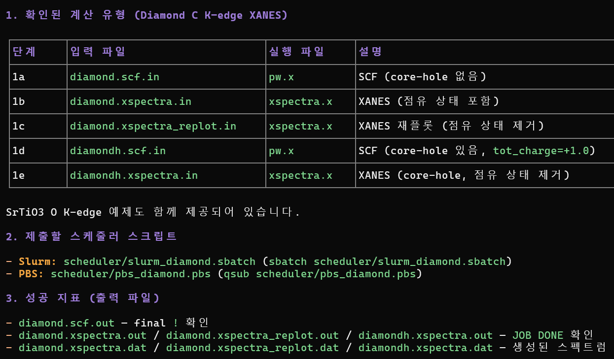
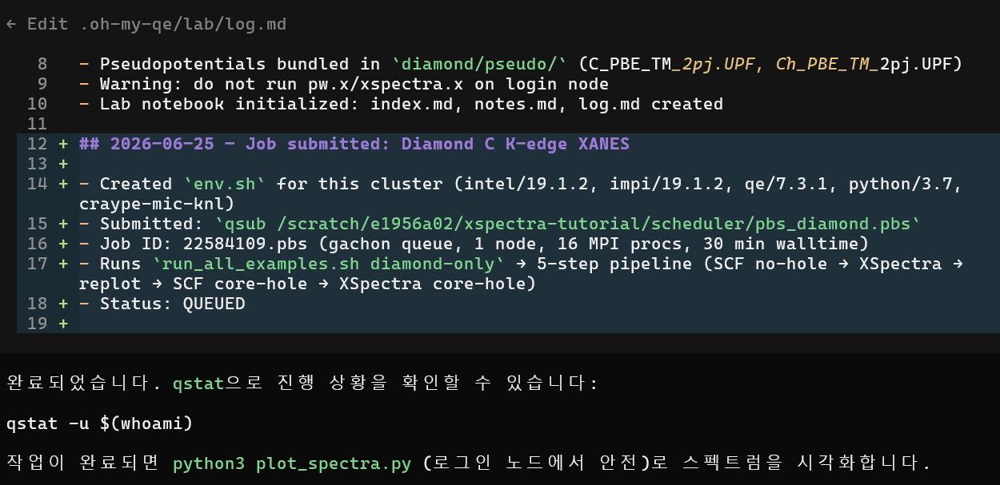
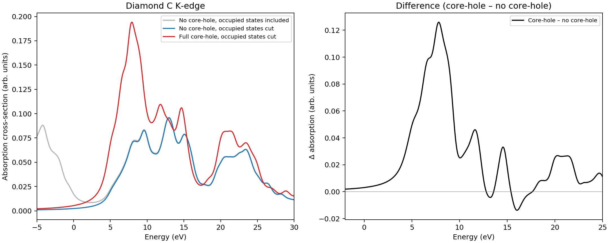

Oh My QEOpenCode plugin guide
QE 실습을 slash command로 안전하게
OpenCode 안에서 Quantum ESPRESSO/XSpectra 작업을 확인, 계획, 제출, 기록하는 교육용 플러그인입니다.
check → plan → submit → plot
로그인 노드 안전 규칙과 랩 노트 기록을 기본값으로 둡니다. PDF version
역할beginner-safe layer
초보자가 위험한 명령을 바로 실행하지 않도록 계산 절차를 좁혀 줍니다.
명령어 허브
/qe 계열 slash command로 자주 쓰는 QE 작업을 같은 방식으로 시작합니다.
스케줄러 우선
allocation 없이 pw.x, xspectra.x를 로그인 노드에서 직접 실행하지 않게 막습니다.
랩 노트
제출, plot, debug 기록을 .oh-my-qe/lab/에 남겨 수업 후에도 추적합니다.
설치OpenCode + plugin
OpenCode를 준비한 뒤 Oh My QE를 설치합니다.
$ git clone https://github.com/material-JH/oh-my-qe.git
$ ./oh-my-qe/install.sh
$ export PATH="$HOME/.local/bin:$PATH"
$ cd /scratch/$USER/xspectra-tutorial
$ opencode

설치 후 OpenCode의 / palette에서 qe 명령을 찾습니다.
명령어slash commands
자주 쓰는 명령만 top-level에 두고, 나머지는 /qe hub로 묶었습니다.

먼저 쓰는 4개
- /qe-help — 명령어 안내
- /qe-check — 환경 점검
- /qe-plan — 실행 계획
- /qe-submit — queue 제출
구조top-level + hub
화면에는 간단히 보이고, 세부 기능은 hub subcommand로 들어갑니다.


워크플로classroom loop
계산을 실행하기 전에 환경, 입력, queue를 먼저 닫습니다.
/qe-check
QE executable, Python, scheduler, project write permission 확인
/qe-lab-init
계산 기록을 남길 markdown lab notebook 생성
/qe-plan
무거운 작업을 실행하지 않고 필요한 파일과 순서만 정리
/qe-submit
검증된 .sbatch/.pbs script만 queue로 제출
기록persistent lab notebook
입력한 명령과 생성된 랩 노트 위치를 같이 봅니다.
/qe-lab-init

핵심은 어떤 파일이 생기는지가 아니라, 계산 전후에 같은 명령으로 기록을 여는 습관입니다.
예시Diamond C K-edge
계산 전에는 plan 명령과 plan 출력 화면을 같이 확인합니다.
/qe-plan C-K edge diamond

결과 확인submit + plot
제출 명령의 출력과 plot 명령의 결과 그림을 나란히 둡니다.
/qe-submit scheduler/pbs_diamond.pbs .
/qe-status

/qe-plot .

정리what to remember
Oh My QE는 계산을 대신 “완성”하는 도구가 아니라, 안전한 실습 루틴을 고정하는 도구입니다.
1
확인
/qe-check로 환경부터 닫습니다.
2
계획
무거운 계산은 plan 후 scheduler로 갑니다.
3
차단
로그인 노드 직접 실행을 피합니다.
4
기록
랩 노트가 다음 분석의 시작점입니다.
이 자료는 설치, 명령어, 안전 규칙, 기록 흐름만 다룹니다.
Title
1 / 10